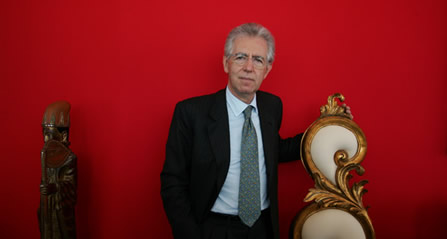

A
Mario Monti
il "Premio Arte e Cultura”
Una cerimonia breve ed intensa, a metà
del convegno sull’editoria, per la consegna
all’economista Mario Monti del «Premio
Arte e Cultura La Bagnaia».
Promosso dall’Associazione Culturale Attilio
Monti il riconoscimento, che consiste in una scultura
del maestro Pietro Cascella, è
stato consegnato dalla Signora Marisa Monti Riffeser.
«Son doppiamente felice - ci ha detto l’ex
commissario europeo - di ricevere il Premio nell’ambito
di un convegno dedicato ai giornali e agli studenti.
In primo luogo perchè ho insegnato per
molti anni e nello stesso tempo scrivevo sui giornali.
Il momento più bello era quando i ragazzi
mi interrogavano su quanto avevo pubblicato quel
giorno. In secondo luogo perchè è
importante andare con la memoria a grandi figure
di imprenditori ed editori come Attilio Monti,
certi personaggi sarebbero quanto mai necessari
anche oggi per ridare slancio al Paese».
La Signora Monti Riffeser ha commentato: «mio
padre visse in un’epoca di grandi capitani
d’industria che fecero il bene dell’Italia.
Era un uomo di grande sensibilità civile
e amava l’arte. Per questo il Premio che
gli è dedicato è un premio di arte
e di cultura».
A scegliere il vincitore sono stati i direttori
dei quotidiani che partecipano all’iniziativa
«Quotidiano in classe».
Lo scorso anno, alla prima edizione, il Premio
Arte e Cultura toccò ad Enrico Mentana.

|